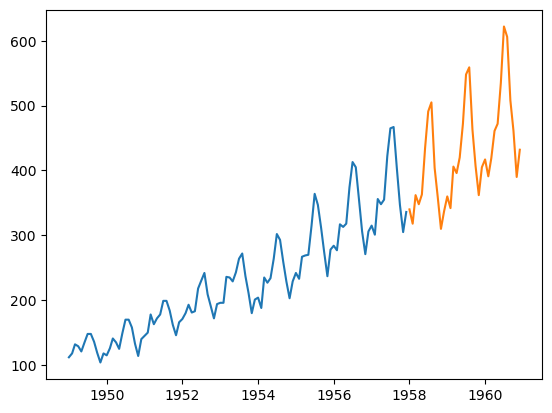

import pandas as pd
df = pd.read_csv("AirPassengers.csv", parse_dates=["Month"]).rename(columns={"Month":"ds", "#Passengers":"y"})
import matplotlib.pyplot as plt
plt.close("all")
X_train = df[df.ds<"19580101"]
X_test = df[df.ds>="19580101"]
plt.plot(X_train['ds'], X_train['y'])
plt.plot(X_test['ds'], X_test['y'])
[<matplotlib.lines.Line2D at 0x7fb40527d880>]

from prophet import Prophet
pro = Prophet()
pro.fit(X_train)
18:55:40 - cmdstanpy - INFO - Chain [1] start processing
18:55:40 - cmdstanpy - INFO - Chain [1] done processing
<prophet.forecaster.Prophet at 0x7fb40589db50>
pred = pro.predict(X_test)
df.tail()
|
ds |
y |
| 139 |
1960-08-01 |
606 |
| 140 |
1960-09-01 |
508 |
| 141 |
1960-10-01 |
461 |
| 142 |
1960-11-01 |
390 |
| 143 |
1960-12-01 |
432 |
future = pro.make_future_dataframe(periods=10, freq = 'M')
future.tail(20)
|
ds |
| 98 |
1957-03-01 |
| 99 |
1957-04-01 |
| 100 |
1957-05-01 |
| 101 |
1957-06-01 |
| 102 |
1957-07-01 |
| 103 |
1957-08-01 |
| 104 |
1957-09-01 |
| 105 |
1957-10-01 |
| 106 |
1957-11-01 |
| 107 |
1957-12-01 |
| 108 |
1957-12-31 |
| 109 |
1958-01-31 |
| 110 |
1958-02-28 |
| 111 |
1958-03-31 |
| 112 |
1958-04-30 |
| 113 |
1958-05-31 |
| 114 |
1958-06-30 |
| 115 |
1958-07-31 |
| 116 |
1958-08-31 |
| 117 |
1958-09-30 |
df
|
ds |
y |
| 0 |
1949-01-01 |
112 |
| 1 |
1949-02-01 |
118 |
| 2 |
1949-03-01 |
132 |
| 3 |
1949-04-01 |
129 |
| 4 |
1949-05-01 |
121 |
| ... |
... |
... |
| 139 |
1960-08-01 |
606 |
| 140 |
1960-09-01 |
508 |
| 141 |
1960-10-01 |
461 |
| 142 |
1960-11-01 |
390 |
| 143 |
1960-12-01 |
432 |
144 rows × 2 columns
</div>